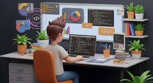

About Me
I am a passionate and curious learner striving to master front-end development. I’m deeply driven, always excited to learn. Right now, I’m focused on mastering JavaScript,Css,HTML. Once I finish, I plan to dive into React, and then move on to learning about databases and back-end development. I’m also excited about exploring AWS as I grow. My ultimate goal is to become a full-stack developer, mastering both front-end and back-end technologies. I am particularly passionate about cloud computing with AWS. I plan to gain strong expertise in AWS services, build scalable applications, and work on impactful projects globally. I’m committed to continuous growth and learning.
.png)

Project
I have built a responsive calculator app using HTML, CSS, and JavaScript. Each project pushes me to grow. I’m currently working on a personal portfolio website to showcase my skills and future work. My ambition is to become a full-stack developer—after mastering front-end, I plan to dive into back-end technologies, and I’m determined to build ambitious full-stack applications that make a real impact.